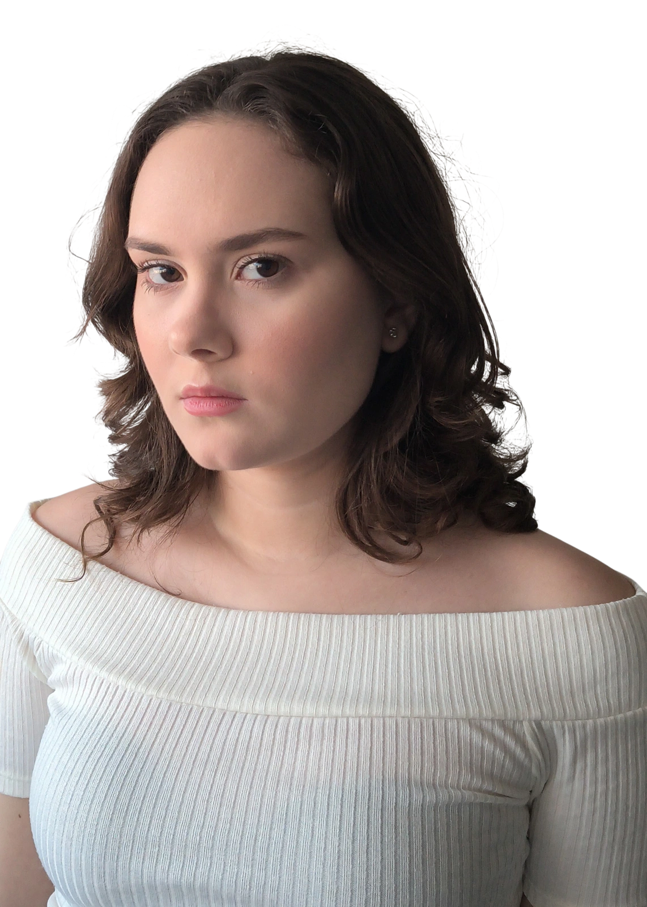

Acting for Camera
Actor’s Edge
Ongoing · Online
ACTRESS · PERFORMER
Experience, training and skills
across theatre, movement and performance.

| Production | Year | Role | Company | Direction |
|---|---|---|---|---|
| Xandú e seus causos | 2022 | Xandú Quaresma | Escola Cenário Arte e Cultura | Rayssa Medeiros |
| Senhora dos Afogados | 2023 | Neighbor / Father | Escola Cenário Arte e Cultura | Rayssa Medeiros |
| A Capital Federal | 2023–2024 | Eusébio / Benvinda | Escola Cenário Arte e Cultura | Rayssa Medeiros |
| Clowning Sketches | 2024 | Clown / Solo & Ensemble | Escola Cenário Arte e Cultura | Rayssa Medeiros |
| Production | Year | Role | Company | Direction |
|---|---|---|---|---|
| Nascedouro | 2023 | Ballet Ensemble | Escola Cenário Arte e Cultura | Izabella Aranha |
| O Lago dos Cisnes | 2024 | Spanish Dance | Ensemble | Escola Cenário Arte e Cultura | Izabella Aranha |
| O Quebra-Nozes | 2025–2026 | Party Guest & Spanish Dance | Ensemble | Escola Cenário Arte e Cultura | Izabella Aranha |
Actor’s Edge
Ongoing · Online
Rayssa Medeiros
Escola Cenário Arte e Cultura · 2022–2024
Eduardo Cezário / Maria Theresa Machado
Escola Cenário Arte e Cultura · 2023–Present
Extracurricular Program
Liceo II, Uruguay · 2015–2016
DANCE
Intermediate Ballet · Contemporary Dance
MARTIAL ARTS
Karate · Yellow Belt · 2 years of training
PERFORMANCE
Clowning · Improvisation · Storytelling
OTHER
Licensed Driver
Portuguese — Native
English — Fluent
Spanish — Fluent
For casting, representation and professional enquiries.